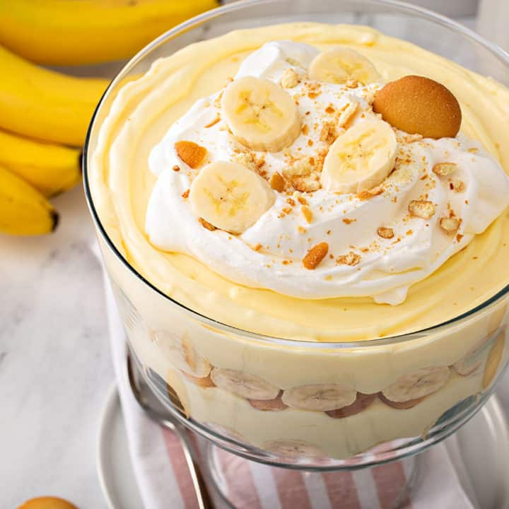

Original Nilla Banana Pudding

Original Nilla Banana pudding is pure heaven. You have the creamy rich, and inviting vanilla taste, followed by delectable banana, and last but not least the satisfying crunch of Nilla wafers. It is my goal to teach you how to make this delicacy.
Ingredients
- 3/4 cup of sugar, divided
- 1/3 cup of flour
- 1 dash of salt
- 3 eggs, separated
- 2 cups of milk
- 1/2 tsp. vanilla
- 45 Nilla Wafers, divided
- 5 bananas, sliced
Directions
- Heat oven to 350°F
- Mix 1/2 cup of sugar, flour, and salt on top of double boiler
- Blend in 3 egg yolks and milk
- Cook, uncovered, over boiling water 10 to 12 minutes or until it has thickened, stirring constantly
- Remove from heat; stir in vanilla
- Reserve 10 Nilla wafers for garnish
- Spread a small amount of custard on the bottom of 1-1/2-quart baking dish; cover with layers of 1/3 with each of the remaining wafers and sliced bananas.
- Pour 1/3 of the remaining custard over the bananas
- Continue to layer wafers, bananas and custard to make a total of 3 layers of each, ending with the custard
- Beat the egg whites on high speed with an electric mixer until soft peaks form
- Gradually add the remaining 1/4 cup of sugar, beating until stiff but not dry
- Spoon over custard; spread evenly to cover entire surface of custard and sealing it well to the edge
- Bake at 350°F for 15 to 20 minutes or until it is light brown
- Cool slightly or refrigerate for several hours until chilled
- Top with reserved Nilla wafers before serving
- Garnish with additional banana slices, if desired
snackworks - Original Nilla Banana Pudding